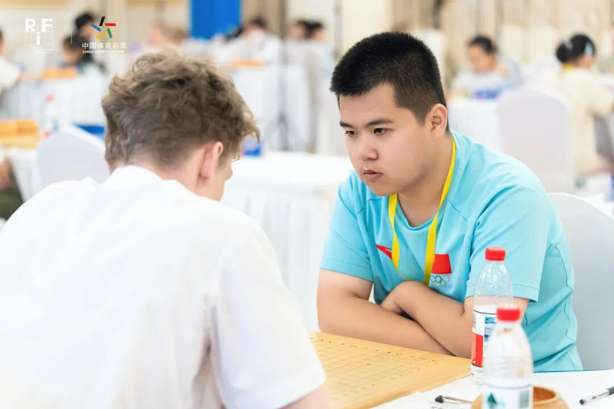
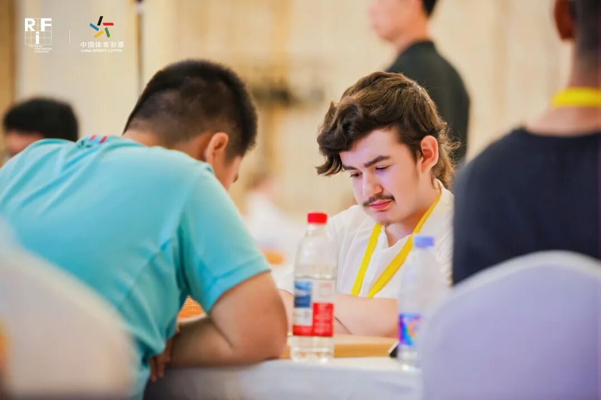
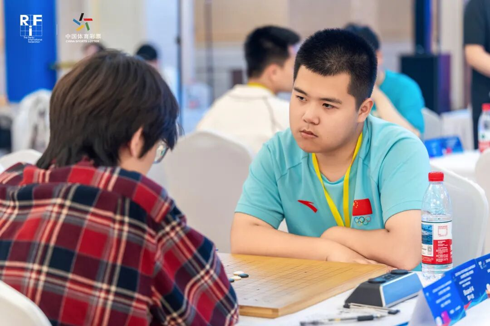
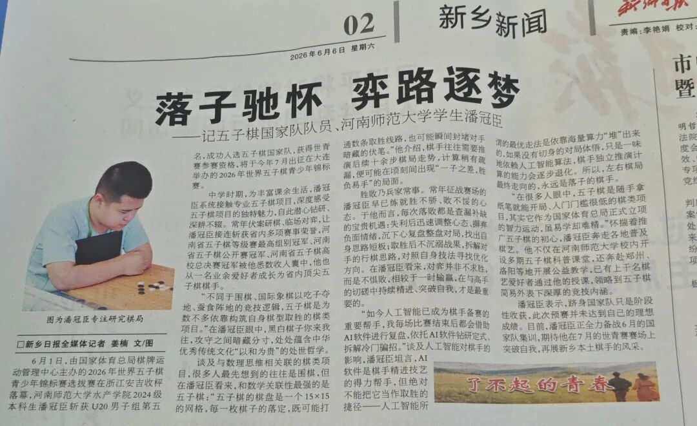
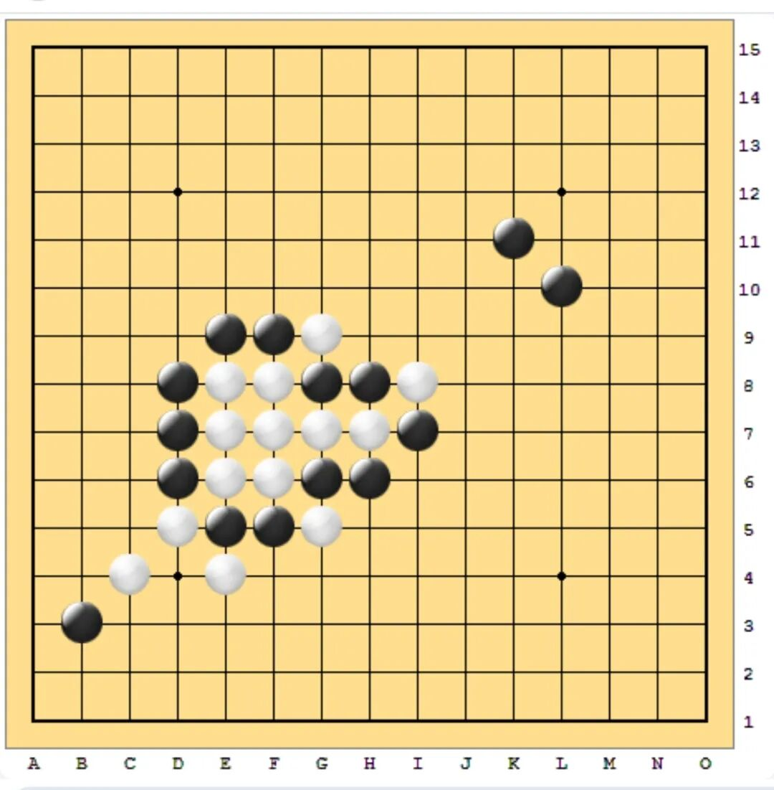
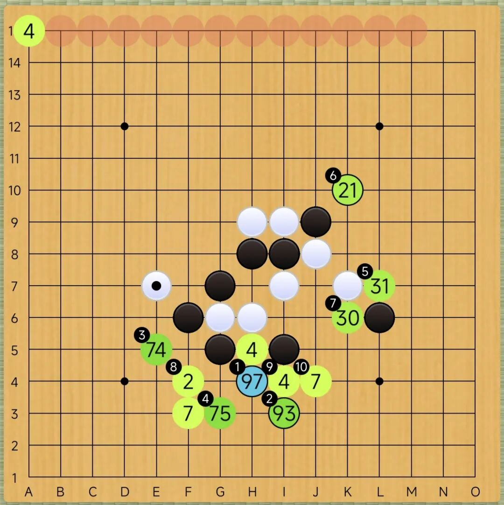
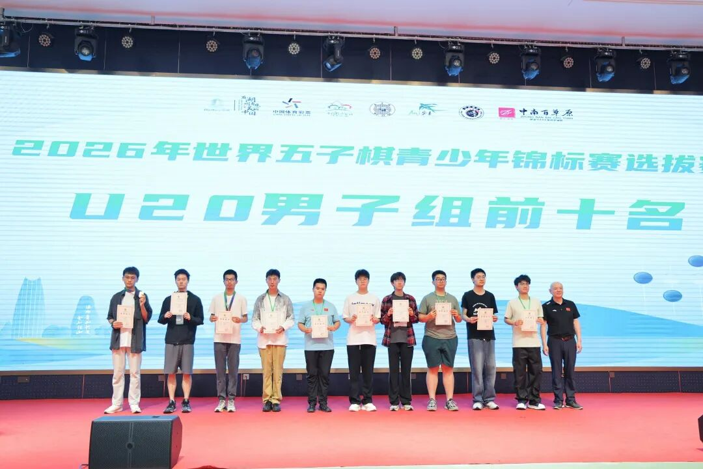
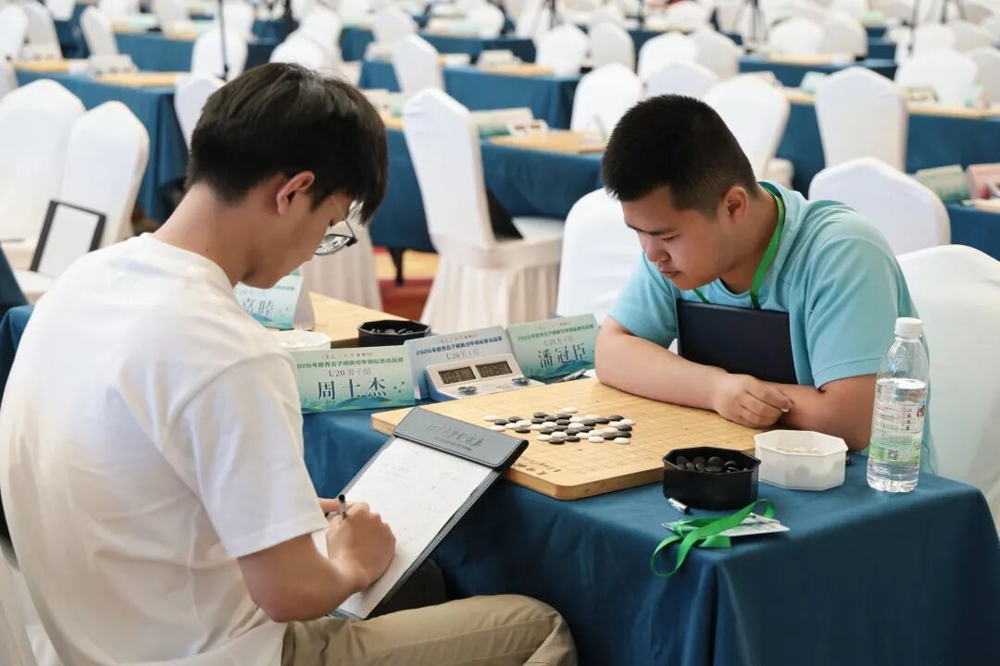

赛后记｜2026第十四届世界五子棋青少年锦标赛
那份空寂的忧愁薄雾
幽灵在连珠圣地徘徊。幽默的少年满载着铩羽而归的热情奔向风卷残云的浓昼之中。幽静的一切充满着窗棂的悲伤与喜爱，走向了一条遗憾之路。幽梦伴随着一阵袭来的薄雾缓缓驶入仲夏的灰暗，这是一种审视，更是一次邂逅。你是否在意那些没有结果的棋局？或是学我那般灵机一动，把VCT通为LCT，在国际舞台上贻笑大方，勇夺新低，成为背景板上浓墨重彩的一笔。无所谓靡痛或是失迷，有一条路尽忘就好；无所谓痴惘或是空寥，走一条路无尽就好。就这样。不如欣赏你那踉跄婉转的画巷。

一羡余之生涯者，悟其漂泊光辉，然未唤寤汝于途。瞥壁煜之斑驳，屡迹入心，引人渐深。老板坐观寰宇之大，博览丹书制诰，度九十九分之可能，见独一分之传奇；副手居幽深之堂，难得一言之鼎，举棋不定者，惝恍怯弱也；运筹者稳居钓台之上，更订史册之果，撮合众望之易。失途者但有自信之躯，犹绘一忧愁河于前，而破舟不尝安渡；得助之理想者，复拾五手两打之积，欲与娱戏诸物言别。噫！盖为连珠之钧天也。然吾侪未尝有斯志耳。

二吹牛师希望你回顾历史，分析那一个个精神褴褛的时刻。原来昨日的雅皮士业已重拾信心，背弃了工体大街上汗流浃背的夜晚。功利家在错觉的幻影中激荡着，把永恒推向了深渊并破碎了最初的纯粹。有时我们奋勇争先，虽然太多赶路的人早已忘却。或许再次绽放一把真理之火，把河南省五子棋公开赛冠军，河南省五子棋等级赛冠军，河南省运动会冠军，河南省锦标赛冠军，河南省五子棋大学生比赛冠军×3，山东省全运会冠军，世界五子棋青少年杯冠军，洛阳市公开赛冠军，洛阳市棋王赛冠军，洛阳市少年游冠军等数十张全胜的冠军证书烧尽，扔进存放悲凉的废弃阁楼。而将剩下几张亚军，季军和不入名的证书如数保留，铭记那一个个失败的时刻。可坦白来讲，潘冠臣，除了塔拉山口-10规则的河南省公开赛冠军水平够高，段位选手够足，其余的冠军含金量值得商榷。这份卖弄只能沦为又一种泛泛而谈。或许把快乐连珠作为信仰的他们，大抵未尝失败的喜悦或成功的苦痛。才发觉，在你的周围，满是淡淡的薄雾。而在你的周遭，仍是漫长的时间。

三跟班们希望你展望未来，成为连珠之光中绚丽的霓虹。星塔提供了优美的可能，而月光照亮了伟大的前程。“漂亮的VCT！”一位东方的前辈战胜了西方的霸主。然而跟班也常常暗自咒骂，控诉着那广度的不公与深度的失衡。然而那漂亮的VCT只存在于十分钟后的联想。然而放逐过后依然淡忘了当下的蹉跎。玫瑰花灯绽放在波斯城灿烂的往事之中，只留下一纸空文在世坊间无助地疏离。或许那烂漫的渴望永存在涡轮之上。就像一种不治之症，当一个人失去所有力量，却依旧被劝导着，仍然年轻，还有希望。然惊鸿一瞥，像垃圾一样被扔泄在街上。只看到那群童子军走上大街，不知疲倦的四处游荡。鸟儿在他们想象的未来中是什么颜色？子夜时分，他们都奔向极地，为了那份威士忌般的热血。似神呢喃的电音与如梦一样燃烧的子弹在失落到疯狂的脸上刻满红色的惊惶。嚎叫的花颈在感到恐惧的虚拟中愈发显现羡余的迹象。哦！原来只是紫色的薄雾。原来你所拥有的一切，都在毁灭着你毫不贡献的付出。

四隐居士希望你着眼当下，做好每一道你未曾意识到的习题。而未曾知晓的戾气家们却不以为然，满揣着野心继续挖掘着发明创造，捂着鼻子在垃圾堆里寻找着食欲，欼欼饱腹一顿过后继续上演着一出又一出没有美满结局的表演，未曾拥有一丝坂田时代的气息。在他们的棋迹里，我们领悟到了这个世界上所有的荒谬和疯狂。江山易改的冒险家们终究本性难移，继续开展一批又一批的灵魂试点。他山之石们不能攻玉，只好批量生产一堆又一堆的断壁残垣。而银行家与地产商却熟视无睹，在陟罚臧否中鬼斧神工，诉说着放任自流的故事并继续获取着新的利润与财富。而你的眼睛已经被薄雾笼罩，你是否感觉到那份与生俱来的无能为力？朋友，现在我不能够把你叫醒。但是我们都曾坚信的，现在正是曾经的未来，未来将会是我们梦想的现在。

五赛后回望那失序的风格，确乎是傻头傻脑。那份兑现失败的VCT，在后续的思考中是那样的明了。而回望来者，塔拉山口-9的热情早已飞向恩赐之地，换取一份丰收与喜悦；四瓶水的故事仍然相忘如陌，或许在未来的某一刻能复现这一史诗级的开局。“天哪！双方仅下八手棋就分出胜负！”这份佩服余音绕梁。“唉呀！不知为何情不自禁地爆掉......”点燃炸弹的引线还在烧着，敦促远道而来的嘉宾卸甲而逃。“哎呦！TA真的会下棋吗？”憨态可掬的棋谱在这期末周后也常常是妙趣横生。不愧是镜花水月，每一步都通向了胜利；不愧当最佳军师，每一局都指明了取胜的方式；不愧做北方明珠，每一句豪迈之语都伴随着友好的东方之海，与世人成为绝佳的东劳西燕。世纪末穷街上，有人黯然神伤，在敲响了最后的丧钟后与灰暗的一切阔别，而剩下的人却欢呼雀跃，在疯狂的广场上疾驰着游行的花车，奔向崭新的纪元。在台下，你会赞叹台上的那份精彩与卓越。此刻有一位明日之星，与你再弈几局塔十。薄雾继续笼罩着这片连珠之城。

六明天我们依然热闹非凡，看到往昔的朋友倒在建设大路的花丛上。就像他曾展望着的那样，死在这座惶恐伶仃的村庄，就这样结束在那不应停止的初始之地。可惜他的生活早已迷乱潦草，如同一台精密制造的机器，敦促他不得不继续浪迹天涯。我们都为他感到沉醉，也盼望他醒过来，找到自己希望的故乡。他是我们妙手可得的高徒，也是我们情真意切的伙伴，更是一个魂牵梦萦的过去。我们还会经历更多的高徒和伙伴，但难免失去我们未曾意识到的青春。或许我们会再次从这北方高贵的黄昏出发，搭乘一辆寂寞列车沙哑地吟唱着雨中的记忆。我们愿意坚信，他一定可以；我们也都知道，我一定成功。可惜现在还未到火候。可惜现在我们毫不勤奋。半壁江山说勤奋是踏实之人的标配，或许窃居高位的高位者还在居高临下般引吭高歌。今天我们卸载掉高位的冷漠，用最低微的火焰点燃黎明的粗糙。当你候补成功的那一刻，便是我们下次再见之时。当薄雾散去的那一刻，便是我们下次摇旗呐喊之时。当年轻的心遍布蛛网的那一刻，惟愿我们仍保存那颗勇敢而狂野的心。

七有人曾言，败局新悟，残棋起津。惟愿相信，那些璀璨明天，终成过往印记。对杀失败？业已灰飞烟灭，后有再杀之时。未能如愿？历史最劣成绩，收获盈盈而已。连珠之魂，我们共同铸就;五目之光，我们携手同心。冰糖街道，炊烟依旧袅袅;霓虹果冻，循环时代祈祷。塔拉山口，诉说欺骗之旅;丘月斜月，吟唱最佳线路。或许真如其言，且踏五林坎坷，也为明日史诗。又道友人荆棘，且破薄雾之迷。仍惜昨日英雄，终弃嬉笑之路。何谈糟糕之由，且听溪水云雨。得拾初心使命，方得真理始终。结绝了却。

八朋友，踏上新的旅程，愉悦归乡吧。就像我们从不擅长写八股文那样，散漫地创作起八段文。没有什么事情那么糟糕——生活本就是这样。起码在这场由我们导演的滑稽剧中，充满着欢声笑语，充斥着千头万绪。小丑与士兵都在这广场上做着同样的游戏，子夜的钟声伴着雷暴的炸裂声悄然响起。你是否再次看到那一阵淡淡的薄雾袭来……下一次前行的时候，或许还会再次倒下，但至少我们并没有任其摆布并企求，灿烂起这不羁的生命。你要充满热情与信仰，大步流星地，攻此忘彼地，继续前行。祝福你实现自己的理想——就像当初的我们一样。而现在的我们终将带着时代的灰烬，在血色清晨的一环路上，流光溢彩，富丽堂皇。这绝非空泛的幻想或不切实际的臆想——这将是你迎接梦想的必由之路。但在走上这条路之前，惟愿我们再踏实一点，再健硕一些，多一些心流的震撼，少一些浮华的阴翳。就这样。让薄雾再次从清早的孤星中升起。就让薄雾留下那份属于我们的空白吧。谁知道在下一段旅程中，我们会成为什么呢？或许就是你记忆深处那团挥之不去的薄雾。你也终将在黎明去往他乡，从惆怅走向遗忘……
九(在这里，书写你的下一段旅程)